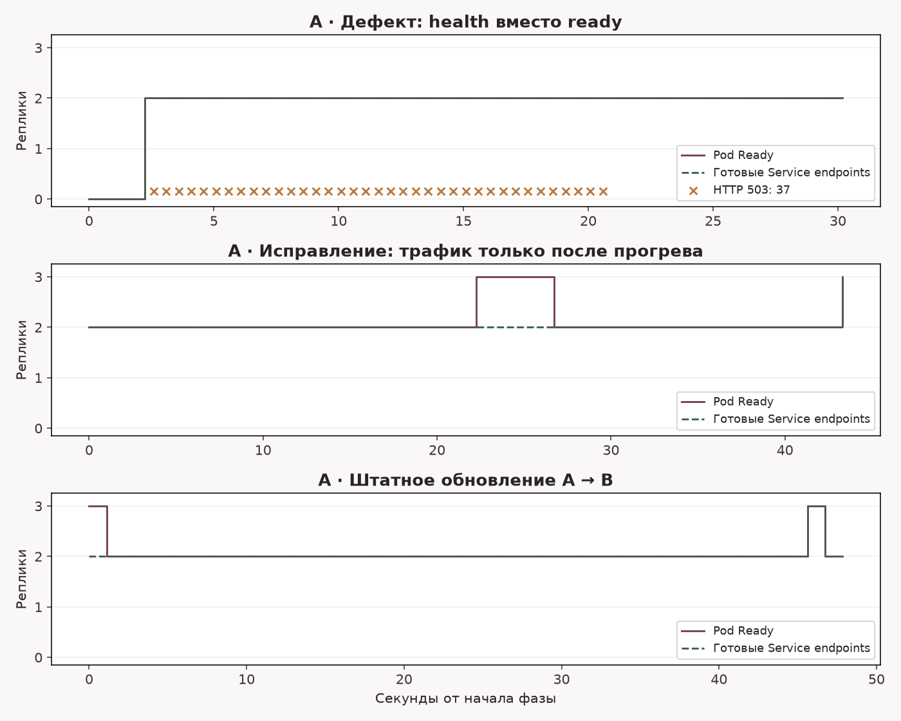
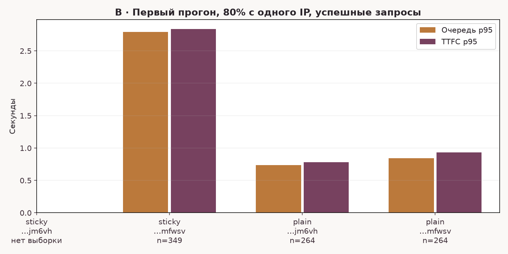
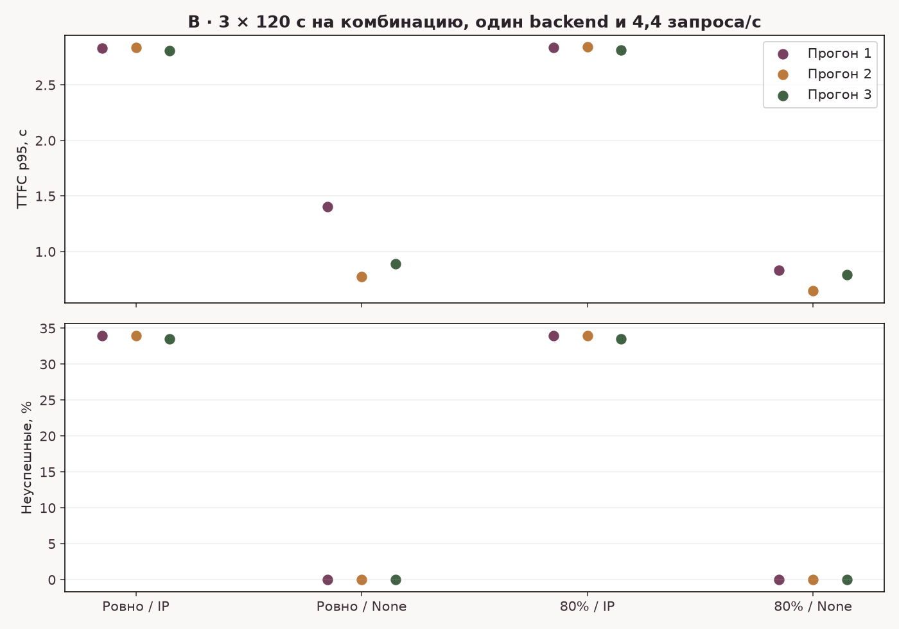
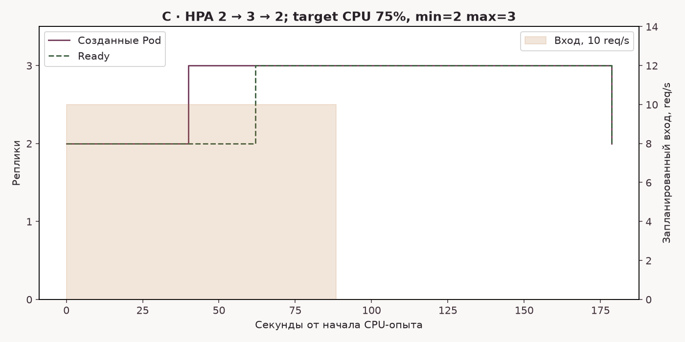

MLOPS-26 · ДЗ 11 · 17 ноября 2026 (МСК)
Сервис работает, пользователи ждут
Kind, Helm и FastAPI. Все результаты ниже получены по HTTP из четырёх Pod. Backend: simulated. TTFC — время до первой части ответа, inter-chunk — между частями. Модель не генерирует токены; TTFT, TPOT и tokens/s не измерялись.
Стенд и происхождение
Apple Silicon, локальная Colima hw11, 3 CPU, 5 ГиБ RAM, виртуальный диск 20 ГиБ; до запуска на хосте свободно около 244 ГиБ. Kind 0.33.0, Kubernetes 1.36.4, Helm 4.3.2. Образ API arm64, 51.0 МиБ (docker inspect). Точные imageID, Docker version, размеры kind/VM и состав контейнеров — в results. Лимиты Pod API 500m/160Mi, requests 100m/64Mi. По умолчанию две реплики.
Prometheus обнаруживает каждый API Pod, собирает CPU/RAM через kubelet cAdvisor и Ready через kube-state-metrics. Хранилище Prometheus ограничено retention 6 ч / 180 МБ и emptyDir 250 МиБ, Grafana — emptyDir 100 МиБ. Экспорт dashboard в monitoring/dashboard.json и results/grafana-export.json. Request/session ID только в логах, не в labels.
Immutable ConfigMap содержит маленький model.json. Имя ConfigMap и ожидаемый SHA-256 вычисляются из этих байтов; загрузчик сверяет хеш и возвращает загруженный model_id и runtime_sha256. Тест замены проверил ту же версию по фактическому ответу. Два диалога передают контекст с запросом; локальный кеш не является хранилищем истории. Для настоящих весов потребуются неизменяемый URI и общедоступное хранилище/локальные копии с хешем; один RWO-том не решает доступ с разных узлов.
A. Прогрев, rollout и откат
Гипотеза: если readiness читает только жизнь процесса, Service пускает запросы до прогрева. Подняли 2 Pod с 20-секундным прогревом, затем повторили 28 секунд по 2 запроса/с после перевода startup на /startup, readiness на /ready. Liveness проверяет /live. Startup budget 65 с. Исправление проверено и прямым обращением к непрогретому Pod: там 503 и он исключён из EndpointSlice.
| Опыт | Запланировано | Завершено | Статусы | Иные исходы |
|---|
| A-defect | 56 | 19 | {'503': 37, '200': 19} | {'rejected': 37, 'completed': 19} |
| A-fixed-final | 56 | 55 | {'200': 55, '503': 1} | {'completed': 55, 'rejected': 1} |
| A-fixed-gated | 56 | 56 | {'200': 56} | {'completed': 56} |
| A-rollout | 122 | 106 | {'200': 106, '429': 16} | {'completed': 106, 'rejected': 16} |
| A-rollout-final | 17 | 17 | {'200': 17} | {'completed': 17} |
| A-bad-B | 54 | 54 | {'200': 54} | {'completed': 54} |
Диагностика: Helm сохранял overrides предыдущего выпуска, если upgrade запускался без новых значений. Это видно по пилотному A-rollout-confirmed, где длинный поток был B, а не A. Для зачётных повторов добавлен --reset-values, версия проверяется на ответах; pilot и A-fixed без явного reset не используются как доказательство.

Ready и Service endpoints по времени. Маркеры — реальные HTTP 503.
RollingUpdate: maxSurge=1, maxUnavailable=0, drain в preStop и Uvicorn graceful 35 с внутри grace 45 с. Длинный NDJSON-поток начат на A до смены; принятие нового B не подменяет ID старого потока. При повторе готовности A-fixed-final был один 503 от старого уже завершаемого Pod, не от нового. Финальный preStop сначала ждёт 3 с на распространение удаления endpoint, затем закрывает приём (drain) и ждёт 1 с. Повтор A-fixed-gated выполнен с этим порядком; это эмпирический запас в локальном кластере, а не атомарная гарантия маршрутизации.
Первый rollout на 2,4 req/s выявил конечность очереди: длительный поток занимает слот и возможен честный 429. Этот опыт сохранён, а повтор с меньшим допущенным потоком проверяет штатный сценарий. Это не обещание нулевых ошибок при произвольной перегрузке.
Неготовая B: neverReady, старые Ready Pod продолжают отвечать A. После helm rollback фактический ответ снова A. Отдельно остановили контейнер без grace после первого фрагмента: незавершённый поток отмечен aborted, контейнер восстановился с тем же model_id. Клиентских ретраев не было.
B. ClientIP и горячая реплика
Два ClusterIP Service имеют один селектор. Kind iptables/kindnet; четыре источника задокументированы в client-ips.json. Connection: close, новый TCP на запрос; нет смешивания с HTTP keep-alive. Таблица по Pod хранит client→Pod. Для ClientIP важен IP источника на этом участке сети, а не cookie или session_id; при прокси/NAT гранулярность другой.
Ровный вход и 80% от клиента 0. Для сравнения политик в каждом профиле одни и те же тела, слоты и параметры; 4,4 req/s, 528 запросов/120 с, 4 фрагмента, интервал 100 мс, deadline чтения сокета 35 с. Размер локального LRU 12, hit 40 мс, miss 280 мс, один running + восемь waiting. Каждый замер начинается с явно очищенных кешей и прогретых процессов, сброс не меняет отсчёт привязки Service.
| Фаза | План / отправлено / успех | TTFC p50 / p95, с | Полный p50 / p95, с | Inter-chunk p95, с | Неусп. / timeout | Макс. сдвиг отправки, с |
|---|
| B-1-skew-plain | 528 / 528 / 528 | 0.174 / 0.831 | 0.480 / 1.137 | 0.105 | 0.0% / 0 | 0.010 |
| B-1-skew-sticky | 528 / 528 / 349 | 2.724 / 2.838 | 3.031 / 3.145 | 0.105 | 33.9% / 0 | 0.036 |
| B-1-uniform-plain | 528 / 528 / 528 | 0.178 / 1.406 | 0.483 / 1.711 | 0.104 | 0.0% / 0 | 0.008 |
| B-1-uniform-sticky | 528 / 528 / 349 | 2.725 / 2.831 | 3.031 / 3.137 | 0.105 | 33.9% / 0 | 0.010 |
| B-2-skew-plain | 528 / 528 / 528 | 0.167 / 0.647 | 0.472 / 0.950 | 0.104 | 0.0% / 0 | 0.008 |
| B-2-skew-sticky | 528 / 528 / 349 | 2.729 / 2.839 | 3.035 / 3.147 | 0.105 | 33.9% / 0 | 0.010 |
| B-2-uniform-plain | 528 / 528 / 528 | 0.175 / 0.772 | 0.482 / 1.076 | 0.105 | 0.0% / 0 | 0.011 |
| B-2-uniform-sticky | 528 / 528 / 349 | 2.723 / 2.833 | 3.030 / 3.140 | 0.105 | 33.9% / 0 | 0.007 |
| B-3-skew-plain | 528 / 528 / 528 | 0.179 / 0.790 | 0.485 / 1.095 | 0.103 | 0.0% / 0 | 0.006 |
| B-3-skew-sticky | 528 / 528 / 351 | 2.705 / 2.815 | 3.009 / 3.120 | 0.103 | 33.5% / 0 | 0.007 |
| B-3-uniform-plain | 528 / 528 / 528 | 0.172 / 0.888 | 0.477 / 1.193 | 0.103 | 0.0% / 0 | 0.005 |
| B-3-uniform-sticky | 528 / 528 / 351 | 2.700 / 2.808 | 3.005 / 3.112 | 0.103 | 33.5% / 0 | 0.011 |

Сравнение p95 очереди и TTFC. n — число успешных ответов реплики.

По три прогона на комбинацию; не смешиваем выборки и не скрываем отказы.
B-1-skew-sticky
| Pod | Получено / успех / отказ | По клиентам | Cache hit | Очередь p95 | TTFC p95 |
|---|
| hw11-5cf48b575d-mfwsv | 528/349/179 | {'0': 423, '1': 35, '2': 35, '3': 35} | 98.9% | 2.792 | 2.838 |
| hw11-5cf48b575d-jm6vh | 0 / 0 / 0 | — | — | — | — |
B-1-skew-plain
| Pod | Получено / успех / отказ | По клиентам | Cache hit | Очередь p95 | TTFC p95 |
|---|
| hw11-5cf48b575d-mfwsv | 264/264/0 | {'0': 215, '2': 14, '3': 21, '1': 14} | 98.5% | 0.844 | 0.931 |
| hw11-5cf48b575d-jm6vh | 264/264/0 | {'1': 21, '0': 208, '2': 21, '3': 14} | 98.5% | 0.736 | 0.779 |
B-1-uniform-sticky
| Pod | Получено / успех / отказ | По клиентам | Cache hit | Очередь p95 | TTFC p95 |
|---|
| hw11-5cf48b575d-mfwsv | 528/349/179 | {'0': 132, '1': 132, '2': 132, '3': 132} | 98.9% | 2.787 | 2.831 |
| hw11-5cf48b575d-jm6vh | 0 / 0 / 0 | — | — | — | — |
Правка для перекоса 80/20: ClientIP → None. Медиана p95 TTFC по трём прогонам: 2.838 → 0.790 с. Медианная доля неуспеха: 33.9% → 0.0%. Это сравнение повторов, не оценка перцентиля из объединённых наблюдений.
Сопоставляем ошибки, очереди, распределение и hit rate; даже если IP-привязка лучше сохраняет LRU, рост очереди может перевешивать выгоду. Ровный вход слабо нагружает один источник, но не гарантирует равное распределение: несколько IP могут попасть в один Pod. Случай на None под перекошенным входом показывает, что большой клиентский IP сам по себе не обязан перегружать один Pod при новом TCP на запрос. Отдельного вывода о production inference engine эти числа не дают.
C. HPA, алерты и перцентили
CPU-нагрузка: 10 req/s, 80% с одного IP, 0,22 секунды CPU работы на принятый запрос; target 75% от requests CPU; resource metrics API подтверждён. Максимальная наблюдаемая средняя загрузка HPA — 304% от requests. Третий Pod появился через 39.9 с, стал Ready через 61.9 с. Возврат к 2 после окончания входа — 90.3 с, включая окно стабилизации 45 с и дискретизацию метрик.

Создание и готовность Pod показаны отдельно, интенсивность по правой оси.
| Алерт | Первый pending, с | Первый firing, с |
|---|
| TooManyRefusals | 8.938 | 17.732 |
| SlowFirstChunk | 11.136 | 19.930 |
Оба алерта удерживают условие 9 с; окно 30 с. SlowFirstChunk: p95 TTFC >0,9 с и ≥12 завершений. TooManyRefusals: доля отказов >10% и ≥20 наблюдений. После снижения нагрузки список активных алертов пуст. Это проверка состояний Prometheus, а не доставка уведомлений через Alertmanager.
Средняя CPU для HPA не различает очередь горячей реплики и простой холодной. Sticky-соединения/выбор по IP не переносятся на новую реплику при её появлении; основная доля нагрузки может остаться на старой. Таблица распределения запроса ниже фиксирует именно наблюдаемые назначения.
| CPU-фаза, Pod | Всего | Завершено | Отклонено | Клиенты |
|---|
| hw11-56c467d947-gx2tr | 737 | 122 | 615 | {'0': 680, '1': 57} |
| hw11-56c467d947-j6vzw | 113 | 113 | 0 | {'2': 57, '3': 56} |
| hw11-56c467d947-cgvh7 | 0 | 0 | 0 | — |
Сравнение одного 96-секундного окна внутри B-1-uniform-plain: клиент n=423, p95 TTFC 0.946 с и полный 1.256 с; Prometheus n≈424.258, p95 0.956 с и 1.331 с. Клиент включает сетевой путь; сервер пишет Histogram после завершения потока. PromQL суммирует increase по bucket с le до histogram_quantile, а не усредняет p95 реплик. Интерполяция bucket, scrape и граничные завершения дают различие.
histogram_quantile(0.95,sum by(le)(increase(lab_ttfc_seconds_bucket[96s])))
Пять собственных проверок
| Проверка | Результат |
|---|
| warmup_and_gating | PASS |
| rollback_version | PASS |
| replacement_version | PASS |
| accounting_abort | PASS |
| isolated_dialogues | PASS |
Сырые результаты содержат план, фактическое время отправки, первый чанк, завершение, статус, модель/Pod и все интервалы. Успех требует маркера done и ожидаемого числа частей; отказ, timeout и оборванный HTTP 200 не входят в перцентили успеха, но входят в знаменатель. При SIGKILL сервер не успевает инкрементировать счётчик aborted, поэтому источник для аварийного потока — клиентская трасса. Защита от опоздания генератора фиксирует expired, не скрывая недоотправленные запросы.
Ревью PR: не привязывать диалог к Pod навсегда
Запрос ещё не начался: при известных оценках отправляю на B. У A только ожидание около 3 с; у свободной B пересчёт 0,8 с. Если остальная стоимость сопоставима, B выигрывает около 2,2 с до первого ответа. Это не правило без условий: нужны измерения очереди и prefill по длинам, пропускная способность декодирования, hit/miss, свежесть сигналов и распределение задержек. Сравниваю прогноз queue + prefill до дедлайна, учитываю доступный слот и лимиты, а не только affinity. При насыщении обоих — явный 429/503 с бюджетом повтора, без бесконечной очереди.
Привязку делаю предпочтением, а не обязательством. История переносится в запросе или сохраняется вне Pod, префиксный кеш лишь ускоряет вычисление. При потере A восстанавливаю историю на B и пересчитываю кеш. Начатый поток не перекидываю между Pod: при плановом обновлении даю ему завершиться, при аварии помечаю незавершённым и разрешаю новую попытку с тем же диалогом и новым request ID, не склеивая частичные ответы как один успешный.
Первичный кейс: Red Hat: multi-turn inference с llm-d. Он сравнивает простую балансировку и маршрутизацию с учётом кеша; для нашего случая важно добавить стоимость ожидания. Материала самой лекции 11 в выданной папке нет, поэтому совпадение кейса с конкретным слайдом не проверено. См. также Kubernetes HPA и Prometheus histograms.
Воспроизводимость и ограничения
Один локальный узел, CPU-имитатор, маленькие контексты и фиксированные задержки; здесь нет эксплуатационного SLA для внешней сети, GPU или реальной генерации. Не обещаем точного повторения назначения случайных TCP-соединений. Команды запуска/удаления и лимиты — в README.md; приложены версии, полная трасса, экспорт Grafana и манифесты. Кластер остановлен после сбора данных.